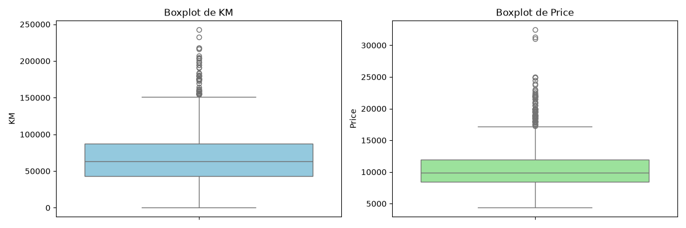
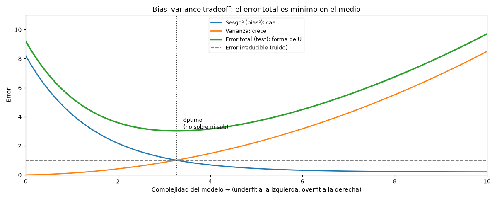

Unidad 1 · ¿Qué son los datos? · Lección 0001
Tipos de datos con Toyota Corolla
Win de hoy: clasificar cada columna de ToyotaCorolla.csv en su tipo
de dato (continua, discreta, categórica, binaria) con ejemplos reales y un snippet que lo verifica.
1 · De símbolos a sabiduría (la escalera DIKW)
Se dice que “los datos son el nuevo petróleo”: el valor no está en el crudo, sino en refinarlo. Y se aplica una Ley de Moore pero en los datos: cada año generamos, guardamos y procesamos órdenes de magnitud más datos que el anterior. Por eso existe esta materia.
La escalera, de abajo hacia arriba:
- Datos. Símbolos crudos, sin procesar. Simplemente existen; no tienen significado más
allá de su existencia. Pueden estar en cualquier forma, usable o no. Ejemplo: el número
46986suelto en el CSV no dice nada. - Información. Datos organizados, estructurados o contextualizados para darles significado.
Agrega contexto, relevancia y comprensión. Ejemplo:
KM = 46986en la fila de un Corolla diésel de 23 meses: ya describe algo observado y medido. Una columna a la que no se le puede dar contexto no genera valor. - Conocimiento. Información analizada: patrones, relaciones y significados subyacentes. Comprensión profunda y contextualizada. Ejemplo: “los Corolla con más KM valen sistemáticamente menos”.
- Insight. Percepción profunda que deriva del conocimiento y lleva a actuar distinto. Es un proceso interpolativo y probabilístico, cognitivo y analítico: una revelación que abre una nueva perspectiva o una acción estratégica de mejora. Ejemplo: “descontar ~X € por cada 10.000 km al fijar el precio”.
- Sabiduría. El nivel más alto: incorpora valores, juicio y experiencia para decidir bien. Es un proceso extrapolativo, no determinista y no probabilístico; se desarrolla con reflexión y práctica consciente. Ejemplo: decidir qué ofertas aceptar, con criterio ético y de negocio, no solo con el modelo.
2 · ¿Por qué surge el análisis de datos?
Por la abundancia de datos:
- Abaratamiento y aumento de la capacidad de almacenamiento y recopilación.
- Nuevas fuentes: IoT, redes sociales, digitalización del comercio y de los registros médicos.
- Las organizaciones empiezan a guardar todo tipo de datos y a reconocer su valor estratégico.
Nuestro caso: 1436 autos × 37 columnas ya alcanzan para equivocarse de muchas formas instructivas. Verificalo vos:
import pandas as pd
df = pd.read_csv("../ToyotaCorolla.csv") # desde lessons/
print(df.shape) # (1436, 37)3 · El win: clasificar cada columna Toyota en su tipo
| Tipo | Columnas ejemplo (valor real) | Cómo reconocerlo |
|---|---|---|
| Numérica continua | Price (13.500; mediana ≈ 9.900, media ≈ 10.731),
KM (46.986; mediana ≈ 63.390) |
Acepta cualquier valor en un rango (decimales incluidos). El boxplot tiene sentido. |
| Numérica discreta / ordinal | Age_08_04 (23 meses; 77 valores distintos),
Mfg_Month (10; solo 1–12) |
Solo enteros contables u ordenados. Mfg_Month además es ordinal: enero < febrero < … |
| Categórica | Fuel_Type (Diesel; Petrol 1264 / Diesel 155 / CNG 17),
Model (“TOYOTA Corolla 2.0 D4D…”, 147 filas con ? inicial) |
Etiquetas sin aritmética válida. Fuel_Type es nominal y está desbalanceada (U8). |
| Binaria 0/1 | Airco (1: hay 730, 0: hay 706),
ABS (1: hay 1168, 0: hay 268) |
Solo dos estados: presencia/ausencia de equipamiento. Base de reglas de asociación (U9). |
Snippet que lo verifica (tipos + conteo de la categórica desbalanceada):
import pandas as pd
df = pd.read_csv("../ToyotaCorolla.csv") # desde lessons/
print(df.shape) # (1436, 37)
print(df.select_dtypes(include="number").shape[1]) # 35 columnas numéricas
print(df.select_dtypes(include="object").shape[1]) # 2 de texto: Model, Fuel_Type
print(df["Fuel_Type"].value_counts())
# Petrol 1264
# Diesel 155
# CNG 174 · Figura: boxplots de Price y KM
El boxplot es el gráfico honesto para una continua: mediana, cuartiles, bigotes y outliers de un vistazo. Réplica de la Parte 1 del análisis OLS de ejemplo:

KM (izq.) y Price (der.). Ambas son continuas con
cola alta: outliers de precio (> 20.000, hasta 32.500) y de kilometraje (> 150.000, hasta 243.000).
La mediana (≈ 9.900 € y ≈ 63.390 km) resume mejor que la media.Snippet generador (pandas + seaborn; el mismo que corre el script del curso):
import pandas as pd
import matplotlib.pyplot as plt
import seaborn as sns
df = pd.read_csv("../ToyotaCorolla.csv").dropna(subset=["KM", "Price"])
fig, axes = plt.subplots(1, 2, figsize=(12, 4))
sns.boxplot(y=df["KM"], ax=axes[0], color="skyblue")
axes[0].set_title("Boxplot de KM")
sns.boxplot(y=df["Price"], ax=axes[1], color="lightgreen")
axes[1].set_title("Boxplot de Price")
fig.tight_layout()
fig.savefig("../assets/img/toyota/0001-tipos-de-datos-toyota-fig1.png", dpi=100)Regenerar cuando quieras (mismo resultado versionado en assets/img/toyota/):
python scripts/make_figures.py --only tipos-de-datos-toyota5 · Desafíos del análisis (y el gráfico más importante de la materia)
Con los tipos claros, estos son los principales desafíos que nos acompañarán todo el curso:
- Cantidad insuficiente de datos de entrenamiento.
- Datos de entrenamiento no representativos (sampling sesgado).
- Datos de mala calidad (el
?deModel, losKM=1). - Features irrelevantes (columnas basura que el OLS de referencia excluye).
- Overfitting: memorizar el entrenamiento (siempre hay un grado; lo grave es pasarse).
- Underfitting: modelo tan simple que ni aprende el entrenamiento.
- Bias–variance tradeoff: el equilibrio entre ambos. 👇
El tradeoff sesgo–varianza, bien explicado
Para un punto nuevo, el error esperado de un modelo se descompone en tres piezas:
Error esperado = Sesgo² + Varianza + Error irreducible.
- Sesgo (bias): cuánto se equivoca el modelo en promedio, por ser demasiado rígido.
Modelo “tonto pero estable”. Ejemplo Toyota: predecir siempre 9.900 € (la mediana) sin mirar
KM. - Varianza (variance): cuánto salta la predicción si entreno con otra muestra.
Modelo “nervioso”. Ejemplo: un árbol gigante que memoriza cada
KMexacto del entrenamiento. - Error irreducible: ruido del mundo que ningún modelo quita (dos autos idénticos en papel se venden a distinto precio). Es el piso de la gráfica.

Cómo leerla con Toyota. Predecir Price solo con la media: punto a la izquierda
(train y test mediocres → underfit). Árbol sin límite que interpola cada fila: punto a la derecha
(train ≈ perfecto, test malo → overfit). El modelo útil vive en el valle de la U. Otra imagen mental equivalente:
la diana: sesgo = qué tan lejos del centro pegás en promedio; varianza = qué tan dispersos
están tus tiros. Querés tiros juntos y en el centro.
6 · Quiz (auto-chequeo inmediato)
7 · Fuente primaria y cierre
Para profundizar (1 fuente):
McKinney, Python for Data Analysis — capítulos de tipos de datos, pandas y limpieza
(wesmckinney.com/book, también en RESOURCES.md del índice).
Es la referencia del curso para todo lo que hoy verificaste con select_dtypes y
value_counts.
¿Algo no quedó claro? Preguntame al agente: qué parte de la escalera dato → sabiduría, qué columna te cuesta clasificar, o cómo leer la U del tradeoff en tu propio modelo. Esa pregunta vale más que releer.